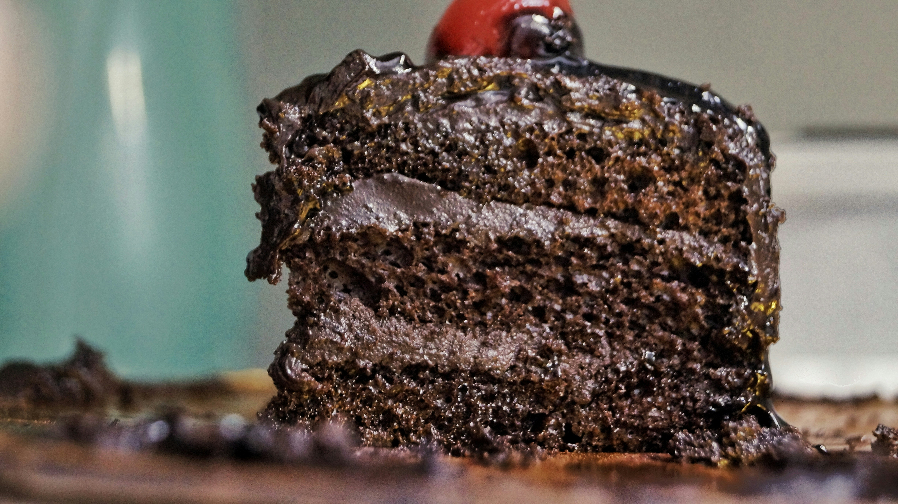

Back to Home
Chocolate Cake Recipe

Description
This chocolate cake recipe is rich, moist, and perfect for any chocolate lover. It's ideal for birthdays, celebrations, or just a special treat.
Ingredients
- 1 and 1/2 cups all-purpose flour
- 1 and 1/2 cups granulated sugar
- 3/4 cup unsweetened cocoa powder
- 1 and 1/2 teaspoons baking powder
- 1 and 1/2 teaspoons baking soda
- 1 teaspoon salt
- 2 large eggs
- 1 cup whole milk
- 1/2 cup vegetable oil
- 2 teaspoons vanilla extract
- 1 cup boiling water
Instructions
- Preheat your oven to 350°F (175°C). Grease and flour two 9-inch round cake pans.
- In a large bowl, combine the flour, sugar, cocoa powder, baking powder, baking soda, and salt.
- Add the eggs, milk, oil, and vanilla extract. Beat on medium speed for 2 minutes.
- Stir in the boiling water (batter will be thin). Pour the batter into the prepared pans.
- Bake for 30-35 minutes or until a toothpick inserted into the center comes out clean.
- Cool for 10 minutes in the pans, then remove from pans to wire racks to cool completely.
- Frost with your favorite chocolate frosting and enjoy!